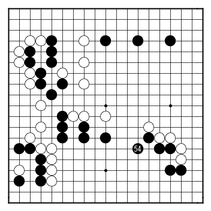
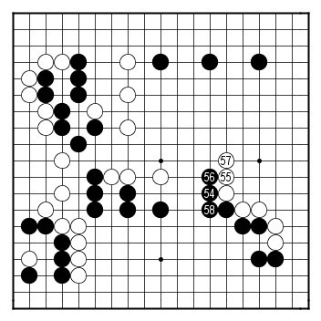

Teaching game with Kato Masao
by Sorin Gherman
Kato Masao has been one of Japan's Go superstars for a very long time. A student in the famous Kitani school, he won his first title in 1976, and the last title in 2002, which makes for one of the longest successful Go careers in history. Kato Sensei's nickname was "The Killer" in his earlier career, due to his very aggressive style.
He unexpectedly passed away at the end of 2004, at the age of 57. There is an in memoriam English page on the Nihon Ki-in website.
This article is based on a teaching game I received from the late Kato Masao. The occasion was the 1990 World Amateur Go Championship: I won my first Romanian National Championship in 1989 and so I represented Romania in 1990 in Hiroshima, Japan (I was 3 dan at that time). Kato Masao was the main referee.
I knew about Kato Sensei from his books: "Kato's Attack and Kill", "The Chinese Opening: The Sure-Win Strategy", and "Tesuji for 1-kyu" (I don't think the latest one was published in English: it was translated in Romanian directly from Japanese - I remember seeing Kato's signature of approval of the translation) but I had never dreamed of seeing him so close. You can imagine my delight when I learned that he is the main referee for the WAGC!
All WAGC I went to had a room organized as an ad-hoc Go club so that the participants can play friendly games in the evenings. I had learned from Pieter Mioch (who had been insei in Japan, and was also acting as a translator for this event) how to ask a professional for a game, and I made sure to learn the phrase by heart: "Sensei, onegaishimasu, Go o oshiette kudasai?". Literally, it means "Sensei, can you please teach me Go?" but it fact it's a polite way to ask a professional player for a teaching game.
One of the first evenings of the tournament Hashimoto Shoji Sensei (the other referee) was in the hotel playing room. I tried the magic phrase, but he very politely declined (saying he was tired and will go back to his room soon). Then Kato Sensei showed up in the room, so since I had nothing to lose I asked him for a teaching game as well. To my huge surprise, he accepted and suggested that I take 3-stones.
By the way, 3 stones handicap is in a sense "the highest low handicap": it is particularly good for teaching since it leaves one open corner for a partial "even game experience". It is usual for professional players to give less handicap than it would normally be needed: on the one hand, it is encouraging for the student, on the other hand it keeps the game more relaxed, since it makes clear that it's a lesson for the student, not a competition.
I am presenting the main points from the game in a question-answer fashion, based on the comments Kato Sensei made after the game. Most of the questions are based on my mistakes, but a couple are on the way White is exploiting Black's mistakes. You can get the game record at this link.
Problem 1. Black 8 is a bad move - Black is hitting in a place where he can do no damage. What should Black do instead?
Jumping out with 1 is normally responded by White 2, so Black can press from the center with 3, attacking while developing his own group. This is a very common way to play in running fights like this one. This is also particularly suitable for handicap games: Black keeps things simple.
Black can also be more aggressive and press like in this diagram, but White will for sure cut with 2 and 4. Things can get complicated quickly, Black may want to avoid this sort of early fights in a handicap game, especially when there is no clear gain and when there is such a simple alternative such as the one in the previous diagram.
Problem 2. Black has just jumped out with 14. What can White do next? (Hint: try to attack Black's group. In general, taking advantage of Black's weak groups is one main weapon for White in a handicap game.)
With the forcing moves at 15 and 17 White is punishing Black's initial mistake with 8: White is destroying Black's eye shape. Then with 19 White is both attacking and taking profit.
Problem 3. Black played kaketsugi at move 20 in response to White's attack, but that is not good. Where should Black play instead? (Hint: always defending is a sure lose strategy).
Black should defend in an active way and attack the White group on the upper side with this capping move. Since Black A is sente, Black shouldn't worry about White separating Black 20 from the rest of the group. Please notice the similarity of Black's strategy here with the first alternative to Black 8 shown above.
Problem 4. Black took the time to reinforce the upper side - which was praised by Kato Sensei as "good direction of play", but now he is paying the price for that by being attacked in a stronger fashion. Black just ran out with 26, White to play. (Hint: try to think of the attacking lessons in either "Kato's Attack and Kill", or in "Attack and Defense".)
White 27 is an excellent example of what "Attack and Defense" calls a "leaning attack": White is "leaning" against the Black hoshi stone, threatening to do some damage to it while also separating the large Black group on the left side. Compare this move to playing one point above 27 instead: that would also accomplish the separation, but White would have no such strong continuation against Black's hoshi stone.
Problem 5. White's attack took Black by surprise. In the game Black ran away with 28 like in the diagram, but that's not the best move. Where should Black play instead? (Hint: "Play kikashi before defending.")
Black can play a forcing move with 1 in this diagram, strengthening his hoshi stone. Black 3 next continues to defend the corner (a White stone here instead would hurt Black). Now, if White separates the two Black groups, with his hoshi group reinforced Black can just focus on defending his other group with A.
Problem 6. A few moves later, Black feels like defending again in the center with 36. Same question (and hint) as for the previous problem.
This his how Black should play. Black 36 is a nice example of "inducing move" (again, in "Attack and Defense" terminology): Black is forcing White 37, which in turn induces Black 38, where Black is happy to play anyways (since it's covering the weakness in the triangle marked intersection).

Problem 7. Black initiated a tsuke-nobi joseki in the lower-right corner (which was praised by Kato Sensei). But Black 54 is too shy. Where should Black play instead?

Black should be more courageous and resolute and play hane with Black 54. Compared to the game, Black's position is much stronger, while White has no thickness in the center (on the contrary, White's group in the center is a bit thin and Black might profit from that later). The lower and right sides would be miai next.
Problem 8. Last problem. White to play next - where? (Hint: The center of the board looks like a neutral area, but White can change that since he has sente.)
Kato Sensei played White 91, and I defended the upper side territory with 92 (against a White invasion around A). Then White played 93. In just 2 moves, what looked like a neutral center area is now looking more like a 15 points territory for White.
Thank you for a wonderful lesson, Kato Sensei!